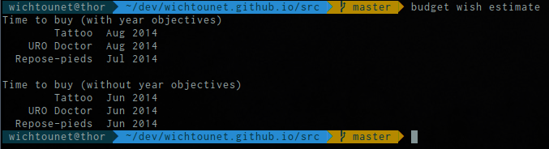
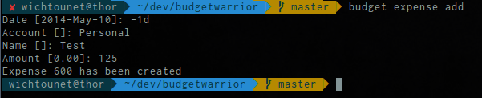

budgetwarrior 0.3.1 - Git versioning and easier creation
I've finished a new version of budgetwarrior: budgetwarrior 0.3.1
Changes
The most interesting change is the ability to estimate the date when it is a good time to buy something from the wish list. This is done with the budget wish estimate command:

This command gives you two dates for each wish in your list. The first is the date wating for each yearly objectives to be fullfilled. The second one considers only the monthly objectives. For now on, no estimation of expenses is made for the future months. It means that the estimation is made as if there were no expenses in the future months. I'll try to improve that by considering averages of expenses in the previous months to make it more reliable.
Still on the wish module, you can now mark your wishes as paid instead of deleting them. This helps you keep track of the prices of your wishes. This is done with the budget wish paid id command. Finally, the totals of the unpaid wishes and of the paid wishes is displayed in budget wish list.
Another helpful change is the ability to set a date relative to today's date when creating an expense or an earning. For instance, you can create an expense one month before (-1m) or in one year ((+1y) or yesterday (-1d):

Of course, you can also still set the date manually.
The last major change is the addition of a new module: budget versioning. This module helps you manipulate you budget directory with Git. There are two new commands:
- budget versioning save: Commit the current changes with a default message (Update).
- budget versioning sync: Pull the changes from the remote directory and push the local changes.
This will only works if you have already configured your budget directory to use Git.
Conclusion
I hope you'll found these changes interesting :)
If you are interested by the tool, you can download it on Github: budgetwarrior
If you have a suggestion or you found a bug, please post an issue on the github project: https://github.com/wichtounet/budgetwarrior.
If you have any comment, don't hesitate to contact me, either by letting a comment on this post or by email.
Comments
Comments powered by Disqus